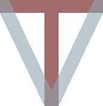
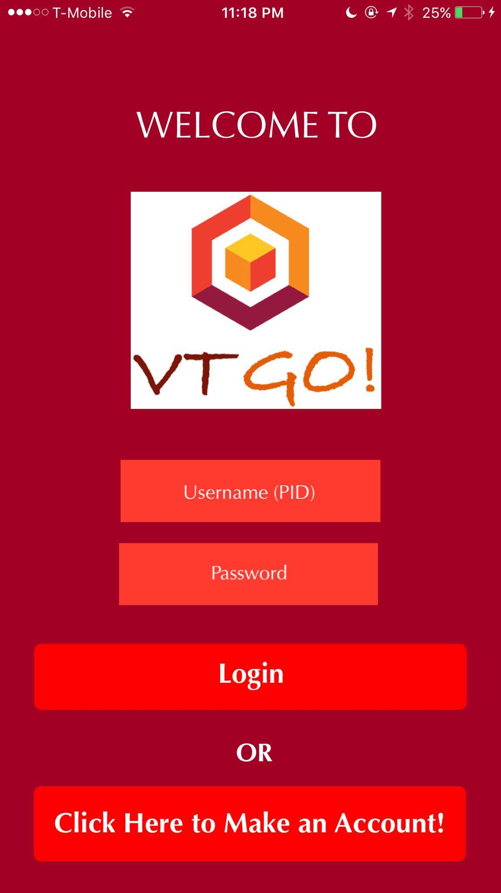
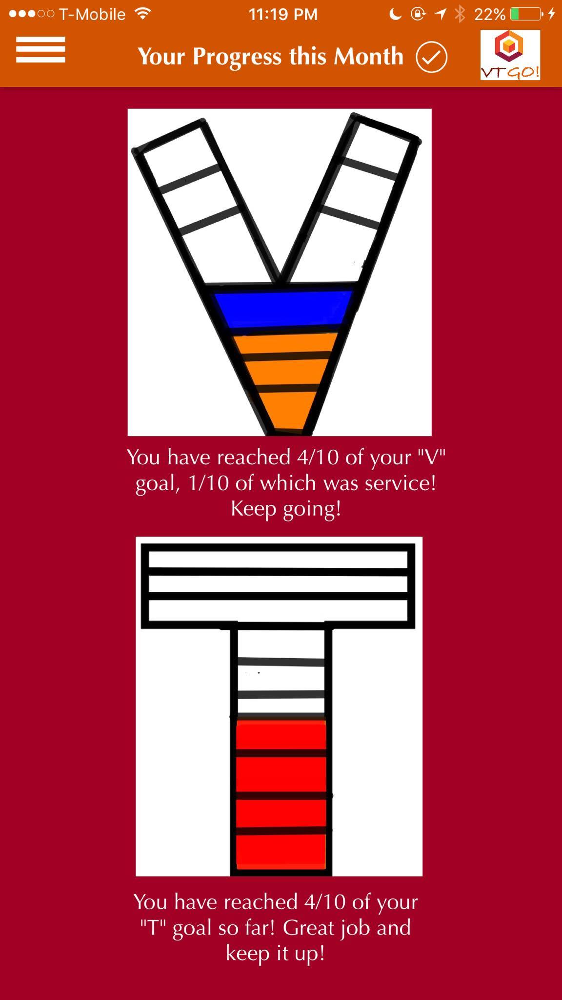

Welcome to the website of a VT-shaped student!
Please feel free to navigate through this website to learn more about what it means to be a solid VT-shaped student and different components that form this ideal. Hope you enjoy!
Questions? Comments? Please email keertana@vt.edu and I will get back to you within 24 hours.

INTRODUCTION

About Me:
Hi there! My name is Keertana Srinivasan and I wrote the content for this website. The template, Prologue, was designed by HTML5 UP. I live in Vienna, VA (NoVa) and I'm currently a rising senior at Virginia Tech. I'm double majoring in business information technology and creative writing and minoring in entrepreneurship.


My Experience with Digital Writing:
I have a fair amount of experience in digital writing, mainly by using it in my daily life. By this, I mean that I have experience writing blog posts on Tumblr, condensing my thoughts into 140 character tweets on Twitter, writing status updates on Facebook, updating my LinkedIn profile, and e-mailing in a professional and personal manner. In addition to this, I have also written for a few professional blogs in the past. I have also used various websites to publish my poetry, essays, and short stories on the web. During my summer internship last year, I also gained some experience in digital writing. I created several powerpoints to explain the projects that my team was working on, to other colleagues. I also used Microsoft Sharepoint during my internship to post summaries and other critical information regarding the health policies my team was working with. These are just some examples of the digital writing experience I have. I've learned a lot more through this class than I expected, and I'm so excited to continue the journey!
Where I Stand on the Spectrum:
I would say I'm more on the love side of the spectrum than the hate side when looking at the idea of a VT-shaped student. I agree with most aspects of it. I do believe it is essential to have a holistic experience while in college: it is good to be well-rounded and not focus just on technology or just on literature. It is important to obtain disciplinary depth but also breadth. Disciplinary and interdisciplinary skills are equally important because they complement one another. The only thing I found lacking in this model is the implementation of networking and socialization. This model focuses, in my opinion, a little too much on technological proficiency and not enough on how important it is to have important communication skills with others. To be well rounded, you must be able to communicate effectively with those around you, so I wanted this aspect to be touched on a little deeper. However, for the most part, I find this model very ideal and a good guide to stick by while at college!
MY INTERESTS
My Interests at VT:

I have many interests at VT. I have a strong interest in both business and writing and I have held several internships related to both of these fields. I am also interested in languages, science, and entomology. I am currently the VP of Marketing of a professional organization called ALPFA (Association for Latino Professionals of America). As VP of Marketing, I definitely do a lot in the field of digital writing. I post updates for ALPFA on the social media pages - Facebook, Twitter, and Instagram. I have to take pictures and write posts to market our organization and to show the community what our organization does. I have learned from this role how to write and communicate professionally. I talk to representatives of different companies, attend networking events and summits, and participate in events to help ALPFA and the VT community (eg: Big Event, Relay for Life). In addition to ALPFA, I also am a member of the Chi Omega fraternity, through which I participate in philantrophy events (eg: Make a Wish), social events to meet more people in the community, and I attend career events and lectures. Next semester, I will be joining two organizations, both of which deal with digital writing. Firstly, I will be the Assistant Director of Public Relations and Marketing of an organization called FEARless (Female Education Advocacy Representatives). This will definitely involve a lot of communicating with people through the internet about what the organization does and what events we will be hosting. Lastly, I will be a member of The Pylon, which is a digital magazine at Virginia Tech that publishes commentaries, craft, variety, and happenings pieces - news and creative pieces. I am excited to join this team on the business team side of things (there is a business team and an editorial team). I'm sure I'll gain a lot of priceless knowledge about how to work in a team focusing on literary pieces. As this is a digital magazine, I will surely be working a lot with digital writing and working with content on the web.
How My Interests Tie in with the VT-Shaped Student Model:
AN OVERVIEW OF THE VT-SHAPED STUDENT
What is the VT-Shaped Student?
The VT-shaped Student is the ideology that a student is well-rounded - the student should have strong knowledge both in their major and beyond their major, the student should engage themselves with the community, focus on career development, participate in experiential learning programs, and have technological literacy. An education at Virginia Tech is aimed to prepare students for their future by combining disipinary breadth and depth, interdisciplinary skills, experiental learning, passion, and purpose-driven learning.
My Claim:
I believe that I am in the process of becoming an ideal VT-shaped student because I have gradually developed over my three years to be a student with strong disciplinary knowledge, interdisciplinary skill sets in the humanities fields, technological literacy, the practicing of ut prosim, engagement with organizations at VT, and several internships. I still believe that there are ways I can improve and change to become that ideal VT-shaped student. While I feel I have made a lot of progress, I still feel that I have more work to do. I would like to take more classes on subjects outside of my majors. While I have taken many classes outside my major, there is still so much more I want to learn about - for example, history, politics, and ethics. I have had a few internships, but I would like to go past that and try a different form of experiental learning, such as field studies, study abroad, or undergraduate research. This would provide me knowledge in a different way. I would also like to participate in more service - I want to join a service group at VT that has an activity every weekend to help those in the Blacksburg community, so that I can stay constantly involved in service. I am proud of what I have accomplished in the last three years, but I still have a bit more to learn and accomplish before I can be that ideal VT-shaped student.
The "V" in the VT-Shaped Student:
An Overview

What is it?
How have I exemplified it?
The "V" of the student-shaped model is my favorite component, because it allows me to foster the passion and the drive that I have. In the V-component, we have the opportunity to apply the knowledge we have learned to the real world and experience a different form of learning. I definitely feel that by engaging myself with the VT community through clubs, involving myself in service, and gaining first-hand experience through internships, I have become a much better version of myself. Through this, I have become well-rounded, driven, and selfless.
+Internships: I find that I have fit into the "V" aspect by working on my career development and pursuing internships. My career is extremely important to me. I make sure to be proactive by attending all the career fairs, attending mock interviews at the Smith Career Center, and meeting with my career counselor on a regular basis to discuss what opportunities are available for me. By doing this, I was able to master my professional skills and obtain an internship last year at the U.S. Department of Veterans Affairs. My position was an information techology intern. This experience was immensely educational for me, because I was able to apply the skills I had learned in my business modeling class to the internship. But more importantly, I was able to gain new knowledge about my field in a way I hadn't learned from just my classes. By practicing using different softwares, giving presentations, attending meetings, and collaborating with colleagues, I was able to gain communications skills, team-work skills, innovative skills, and much much more. I found this experience invaluable. This year, I similarly was driven to find another internship for an equally fulfilling experience - I will be interning at BAE systems in the IT sector, and I am extremely excited to apply my knowledge and broaden my horizons and learn even more. I have had three other internships in the past, all of which I have learned and grown from. These experiences have really prepared me for when I have a career next year. I enjoy how purpose-driven this component is, because these opportunities challenge me, allow me to experience new things, and gain a level of knowledge and skills I wouldn't be able to gain from the classroom alone. These interdisciplinary skills contribute to a holistic college experience.

+Service: Service is extremely important to me. I've always believed that we shouldn't take what we have for granted and we should always look for ways to help those who are in need. Selflessness is an important value of mine. At Virginia Tech, I participate in service activities through my organizations such as The Big Event, Relay for Life, and Make a Wish. In addition, I was a part of a project for my project management class, in which my group of me and three others worked throughout the semester to raise funds and supplies for the Humane Society of Montgomery County, a non-profit, kill-free animal shelter. These experiences were really rewarding to me because I was able to serve others. The "V" component is very people-centric, as is the act of service.
+Organizations and Activities: I stay as involved as I can in the Virginia Tech community. I am the VP of Marketing of ALPFA (as I discussed earlier), which has taught me crucial networking and marketing skills. I am also a member of the Chi Omega Fraternity, which has helped me embrace sisterhood and genuine friendships, participate in acts of service, and have meaningful conversations. Next year, I will be a part of The Pylon and I will hold an executive position for FEARless. Being a part of these wonderful organizations helps me to be an active and engaged member of the Virginia Tech community. I constantly am learning amazing things about myself by interacting with others and working to accomplish the mission of the organization.
The "T" in the VT-Shaped Student
"T": An Overview
The "T" represents disciplinary and interdisciplinary knowledge. There are two parts to the "T" - the horizontal and the vertical.

The Vertical Component of the T-Shaped Student:
What is it?
How have I exemplified it?

+BIT: I have a solid understanding of finding IT solutions for business problems and how supply chains and operations function. I am able to design analytical models to solve problems, explain planning processes and planning, use software such as SAP, manage projects, know how enterprises plan their resources and control them, and understand how IT operates globally. I have excelled in these classes, gone to office hours to gain additional knowledge, and done research on my own time to learn coding languages such as Python and to learn more about IT in general.
+Creative Writing: I also have strong knowledge of creative writing, my secondary major. I have taken classes ranging from fiction to poetry to critical reading to playwriting, and I have tried my hardest in these classes. I participate in class whenever I can and I take thorough notes on the readings and lectures. I also attend lectures given by speakers whenever I am available that my teacher recommends to gain even more knowledge in these fields. I have compiled many portfolios of my poetry, short stories, essays, and play scripts, and I continue to refer to the feedback I received on these portfolios when I write in my classes today.
The Horizontal Component of the T-Shaped Student:
What is it?
The horizontal focuses on interdisciplinary strength and knowledge - this refers to CLE (Curriculum for Liberal Education) courses, which provide you knowledge in different fields such as humanities and philosophy. CLE courses provide you with better critical thinking skills, cultural knowledge, literacy skills, problem solving ability, a greater understanding of ethics, and much more. These courses are important to developing our creative and liberal side. There is also something called the enhanced T, which adds the factor of being skilled in technology and scientific thinking, no matter what major you are in.
How have I exemplified it?

The T-component's horizontal aspect focuses on our interdisciplinary skills. I have developed these skills by expanding my knowledge and reaching beyond my major - I have done so by taking classes in religion and culture, human development, philosophy, math, ecology and other sciences, technical writing, and more as a way to expand my knowledge even further and be able to look at certain topics through a different lens. Through my project management class, I was able to learn the importance of communications, leadership, and time management. Through my technical writing class, I was able to learn how to write professionally, which is crucial in the career world. Hi Ms. Kimbrell or whomever may be reading this today! I hope you're having a great day. So you've read through my website (I hope), and already know all about what a VT-shaped student is, the V and T specifically, my interests, and my beliefs. Now we're here at...MY PODCAST! If you haven't already, please take a few minutes to listen to my oh so wonderful podcast. :) So let me start with the basics - what exactly is it that I'm trying to prove in my podcast? This podcast reflects my thoughts on the T-component of the VT-shaped model because it emphasizes importance of having depth but also having breadth in our career development. This is something I strongly believe in. I would say that I very much align with the VT-shaped model and I strongly agree with the T-shaped concept as I feel like it helps to develop a capable, prepared, and versatile student. However, with that being said, nothing is perfect. There are a couple issues I have with this model (luckily the positives outweight the negatives, however). I'll start with the negatives. I feel like there is a strong ideology behind this model, but I was that there was a better and deeper way to actually learn how to become a VT-shaped student (hence, the app I designed which you'll read all about in the next section). I learned all about this model - articles and readings and videos - but I was disappointed because one of my favorite aspects hadn't been touched upon very much - service. President Sands, in his speech, briefly mentioned the words "ut prosim," but they hadn't been emphasized the way I wanted them to be. I know that the V focuses on guided experiential learning and informal communal learning, but where does serving others fit in? Would it perhaps fit in the horizontal T instead, since it provides us with skills of selflessness? I wanted service and "ut prosim" to be a much bigger bart of the VT-shaped model, because if we don't help others, then what is the purpose of our lives? Even in our job and real lives, we'll come across situations where the right thing to do is to make a sacrifice and help a fellow human out. I think that if this was more deeply embedded in the VT-shaped model, it would better prepare us to be more compassionate. So I do wish that service perhaps had its own section (as you'll see, I will try to implement this in my app). Something else that troubled me with the model is the lack of emphasis on how important it is to learn from others, communicate with others, and socialize and form those important rapports. I'm sure it is a part of the T, but I really wanted this aspect to be stressed on individually, just like the service aspect. Again, you will see this addition in my app prototype. I think that building relationships with those around us is one of the most important ways we can learn about collaboration, team-work, group ethic, communication, and even about ourselves. I know for a fact I would not be the person I am today without the relationships and the network I have built. I wanted the VT-shaped model to encourage us to become more collaborate and communicative learners, which is one other fault I had with it. A qualm I have with the T is with the fact that the interdisciplinary studies come off as vague to me at times. I know it means to dabble in other disciplines and be able to apply them in our primary discipline, but I would appreciate it more if VT offered a way to perhaps relate those skills to our major - for example maybe an entire separate course on how to integrate/bridge that gap between the disciplinary and interdisciplinary. Now onto the positives, and there are plenty of those! I've had a passion for writing since I was young, but looking back at my old works and pieces today, I had no clue what I was writing about. The grammar was rusty and the content was even more rough - it made sense, but there were no layers. I still cringe revisiting my old work, but at the same time, I use it as a guide because my past writing is what helps me be the writer I am today. When I came to Virginia Tech, I decided to major in English and that was a great decision on my part, because now, I don't cringe at my own writing. The English classes I have taken at VT have helped me to develop my passion for writing to a deep and thorough level. Through poetry and short story workshops (in which I would have to remain silent while the whole classroom offered feedback on my piece), I was able to learn so much about my own writing and what I should fix - something I never had never had the resources to learn before. Further, through critical reading and writing classes and literature history classes, I was able to learn how to become a better and more solid writer. I can already see myself applying these vertical skills in my career paths. For example, at my internship I can apply my IT skills from school into the projects I am currently working on (as it is an IT internship). I am more and more motivated to secure a job for next year after I graduate because I have these vertical "T" skills and I can't wait to utilize and to further develop them! So I would say that I definitely do agree with this aspect of the VT-shaped model and I have nothing to complain about. As I stated in my podcast, interdisciplinary studies is a huge thing for me. I have taken so many courses like CLEs and electives that are offered through VT and I really have gained a fresh perspective and a new way to look at the world. I am able to apply these interdisciplinary skills in my English major by writing with more depth and looking at literature and readings with a different perspective. It really is refreshing to be able to do this, so I agree with the importance of the horizontal "T." So, with all of that being said - I do enjoy the VT-shaped model and I agree with the T-component of it because I know how crucial it is to our professional and our personal development. I like that this model encourages us not only to be well-rounded but open-minded as well, because that is really important to me. It encourages us to try different experiences and learn about new things. But, as with anything - flaws are to be expected. And in my opinion, this model does have some flaws. It does not focus on the community service aspect as much as I would have wanted it to (but then again, that is just my opinion), and I felt that it was overlooked and not stressed enough. I would like the VT ENGAGE organization to gain an even greater presence on campus and for all students to take part in as many volunteer activities as they can. For example, I love service and volunteering, but I didn't even hear of any events except for The Big Event and Relay for life until my junior year! I didn't realize how much I'd been missing out on. There are groups that take trips every weekend to do service locally and I hadn't ever heard of that, though I would have loved to participate. I heard instead about more career-related opportunities and on-campus engagement in other forms. I've always believed that we shouldn't take what we have for granted and we should always look to serve others. So, in my opinion, to be a VT-shaped student we must also embody the motto of our school: Ut Prosim. Tying into that aspect of selflessness, I mainly wish that this model would focus less on our skills from our education and more on our behavior, our social skills and how we interact with others, our character - more on who we are as a person rather than just what we're studying. If this aspect can be incorporated into the VT-shaped model, then that would definitely make me much more inclined to agree with it wholly. But don't get me wrong - this is a great model, but I view it more as a basis and wish there were some focus on aspects other than just education and experience and more on our character and identity. I created this beautiful app with the intent to help create a convenient portal for Virginia Tech students to access opportunities and track their progress, as doing so will help them further their development of becoming a VT-shaped student. The intent is to provide them with the resources to be that ideal student.


The progress section is intended to help users track how many activities they have been completing and how many they have left to do to reach their monthly goal of 10 of each activity. I added the newsfeed section because I felt like the VT-shaped model idea was lacking a social and interactive section. I created this because while I agree with the VT-shaped model for the most part, I felt it was missing a social and communications aspect. As people, we are social creatures. We tend to do what our friends do or what others do. We jump on the bandwagon. It’s not a bad thing, it’s just a human thing. And that’s the point of the newsfeed I have created in my prototype. Users of the app can post questions, market their events, post pictures and videos – they can comment on posts and like posts as well. I really wanted to add this social aspect to encourage students to know it’s okay to ask questions, attend events, and talk to each other. I felt that this social interaction would be a great motivator. It is like any social media platform - Facebook, LinkedIn, Twitter, etc. And I for one know that if it was me using this app, I would appreciate seeing what my friends and other members of the Blacksburg community are up to so I can feel more included and motivated to actually attend. When you click on the comments section, ideally you would be able to see what everybody’s been commenting about on that post.
I am on a constant path to self-improvement and betterment. I believe that it's extremely important to always be the best person we can be and I appreciate that the idea of the VT-shaped student encourages and challenges that belief. While I am proud of my achievements thus far, I believe I still have a ways to go, which is why my claim was that I am in the process of becoming a VT-shaped student. After my sophomore year, I realized I wasn't very involved in the VT community. I had tried joining a few clubs, but they weren't really for me and I wasn't gaining anything from them.That's when I decided I needed to make the most of my four years here. The resources VT offers are invaluable, so I wanted to take advantage of them while I could. I joined different organizations that were a better fit for me and this time around, I actually became involved in them. I volunteered to go to different activities and I made deep connections with others. After college, I want to continue to stay involved. I know the real world can be busy and tough, but I have realized how important it is to stay involved. My plans also include to continue to learn and grow on my own time. I plan to participate in volunteer abroad programs (perhaps the Peace Corp) in my free time, because service is important and we should practice Ut Prosim beyond college. I also plan to be as proactive as I can in my career. I want to work somewhere where I can always challenge myself and learn new things. I want to constantly keep my mind busy and explore different sections within my career. Professional development and growth is vital to me. Outside my career, I want to seize opportunities to learn about different fields. I would love to take classes in religion, linguistics, and philosophy. I would also like to learn more about science, as that has always been a major passion of mine. I would like to learn different languages as well. A goal I have is to ensure that I make time for external knowledge, perhaps by taking community college classes or online classes. Some recommendations I would make to an incoming Virginia Tech student are to GET INVOLVED and stay on top of things. If you have an interest, see if VT offers a club that aligns with that interest! Put yourself out there and learn new things. Talk to people on the Drillfield; make friends. Help those around you. Go to job fairs. Apply for internships. Through my humanities classes - religion and culture classes, philosophy classes - I learned how to think with an open and accepting mind. My math and science classes helped me to be a critical thinker with sharp analytic skills for problem solving. All of these classes that I took outside of my major have contributed to my overall knowledge and to the way I think and act. This interdisciplinary knowledge is a big part of who I am and I believe it is essential for all students to take such classes and broaden their horizons.
Through my humanities classes - religion and culture classes, philosophy classes - I learned how to think with an open and accepting mind. My math and science classes helped me to be a critical thinker with sharp analytic skills for problem solving. All of these classes that I took outside of my major have contributed to my overall knowledge and to the way I think and act. This interdisciplinary knowledge is a big part of who I am and I believe it is essential for all students to take such classes and broaden their horizons.
Where can I find this podcast?
Introduction:
My Claim:
Overview:
What I Don't Like:
What I Like:
Conclusion:
My Intent:
My Design: Pictures and Explanations: VT Go!
.jpg)

.jpg)

.jpg)
My Plans and Goals:
 There is no end to knowledge, so there isn't an end in my quest for knowledge. My goal is to immerse myself as deeply as I can and to put my 100% into everything I do.
There is no end to knowledge, so there isn't an end in my quest for knowledge. My goal is to immerse myself as deeply as I can and to put my 100% into everything I do.
My Recommendations:
 Go to class. Pay attention in class. Take classes in subjects that interest you - not just classes that you're forced to take. Study abroad and experience a different culture. As a senior, I can attest that these four years do indeed fly by you before you know it. If someone had told me from the start how important it is to take advantage of all the resources VT offers you, I would have been very grateful. College is such an important stage of your life, and it is important to make the most of it before it's over.
Go to class. Pay attention in class. Take classes in subjects that interest you - not just classes that you're forced to take. Study abroad and experience a different culture. As a senior, I can attest that these four years do indeed fly by you before you know it. If someone had told me from the start how important it is to take advantage of all the resources VT offers you, I would have been very grateful. College is such an important stage of your life, and it is important to make the most of it before it's over.
{kind=link}
{kind=link}
{kind=link}
{kind=link}
{kind=link}
{kind=link}
{kind=link}
{kind=link}
{kind=link}
{kind=link}
{kind=link}
{kind=link}
{kind=link}
{kind=link}
{kind=link}
{kind=link}